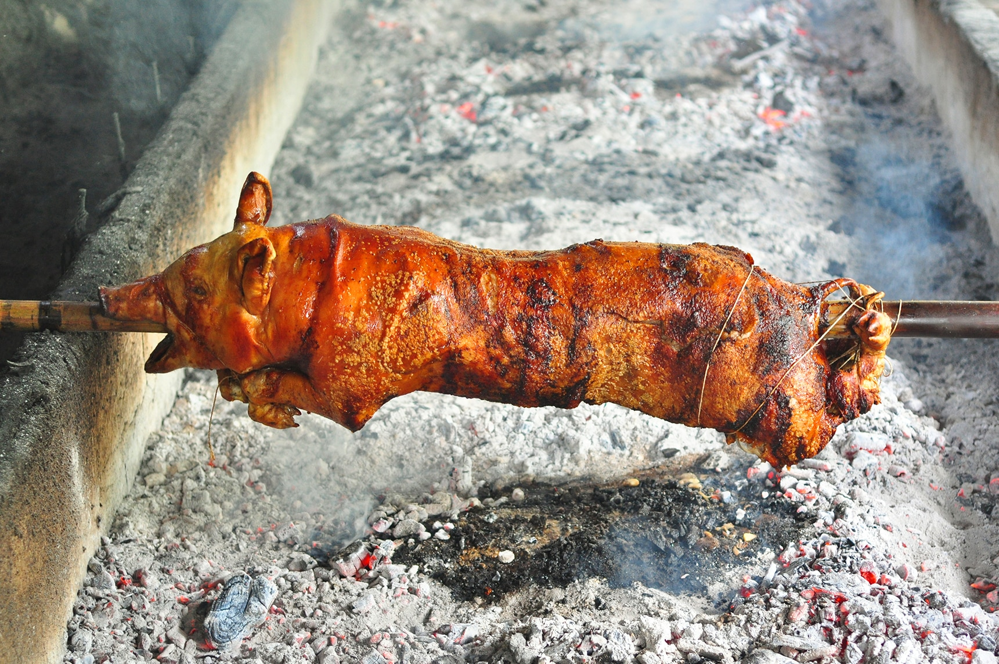
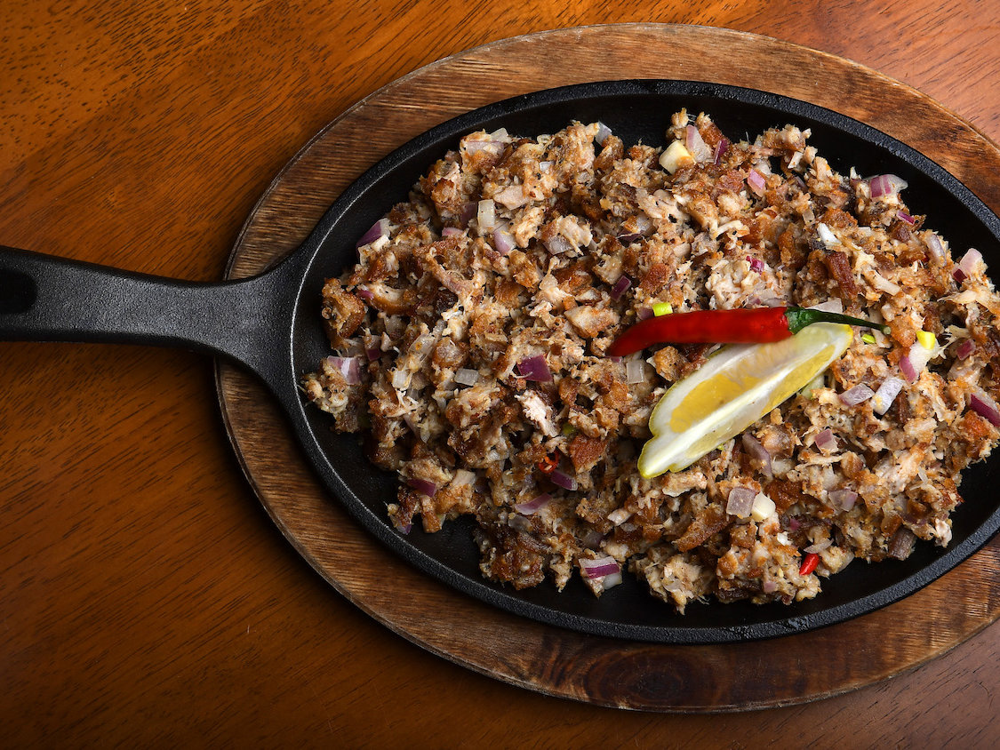
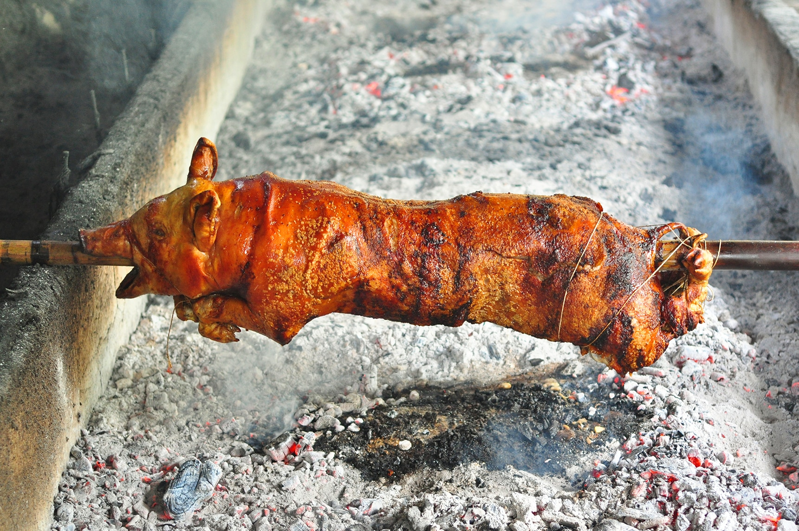
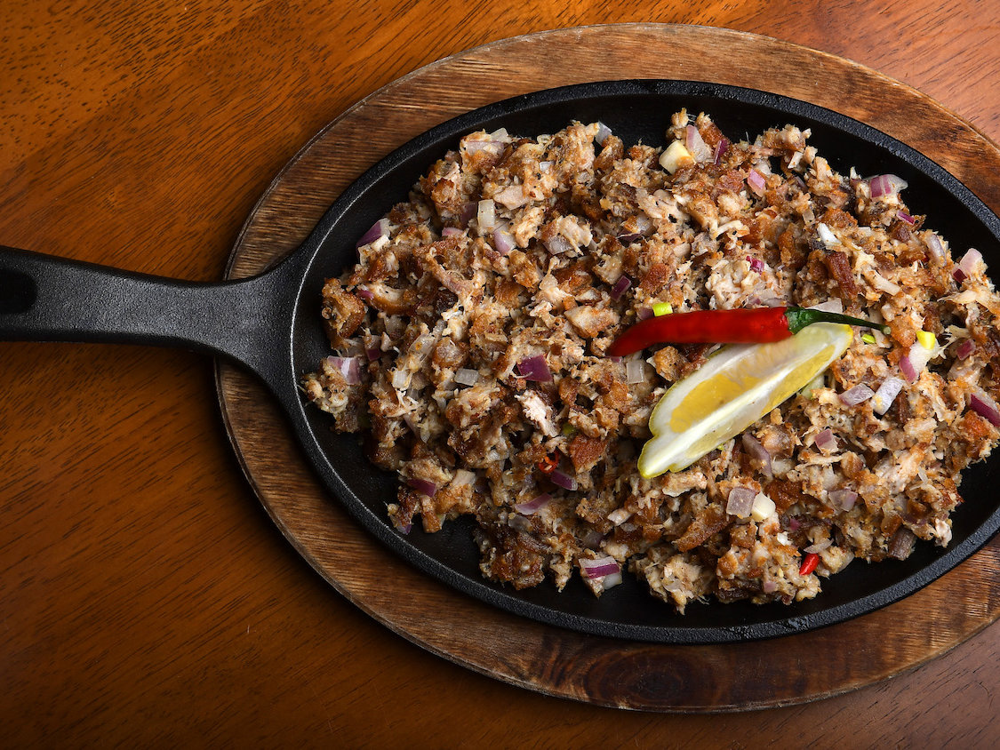

Filipino Cuisines, Food, and Culture.
Foods you might like
 



Filipino Food
Sisig
Sisig is a Filipino dish made from parts of pig head and liver, usually seasoned with calamansi and chili peppers. Sisig was first mentioned in a Kapampangan dictionary in the 17th Century meaning "to snack on something sour" and "salad"
Lechon
Lechón in Spanish or Leitão in Portuguese is a pork dish in several regions of the world, most specifically in Bairrada, Portugal and Spain and its former colonial possessions throughout the world. Lechón is a Spanish word referring to a roasted suckling pig.
Adobo
Philippine adobo is a popular Filipino dish and cooking process in Filipino cuisine that involves meat, seafood, or vegetables marinated in vinegar, soy sauce, garlic, and black peppercorns, which is browned in oil, and simmered in the marinade.
Reviews
"adobo is my favorite"
- No Pa Kor
"Crispy, savory, greasy goodness of lechon"
- Sam Ting Wong
"My favorite dish of all SISIG"
- Wa Shing Ka